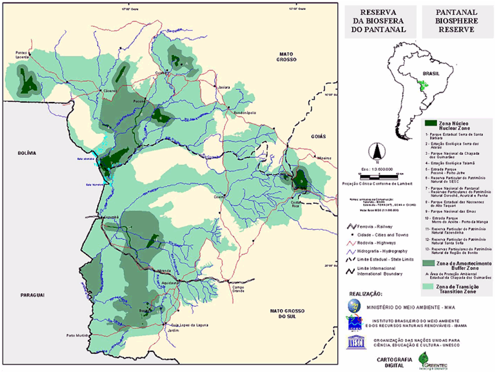
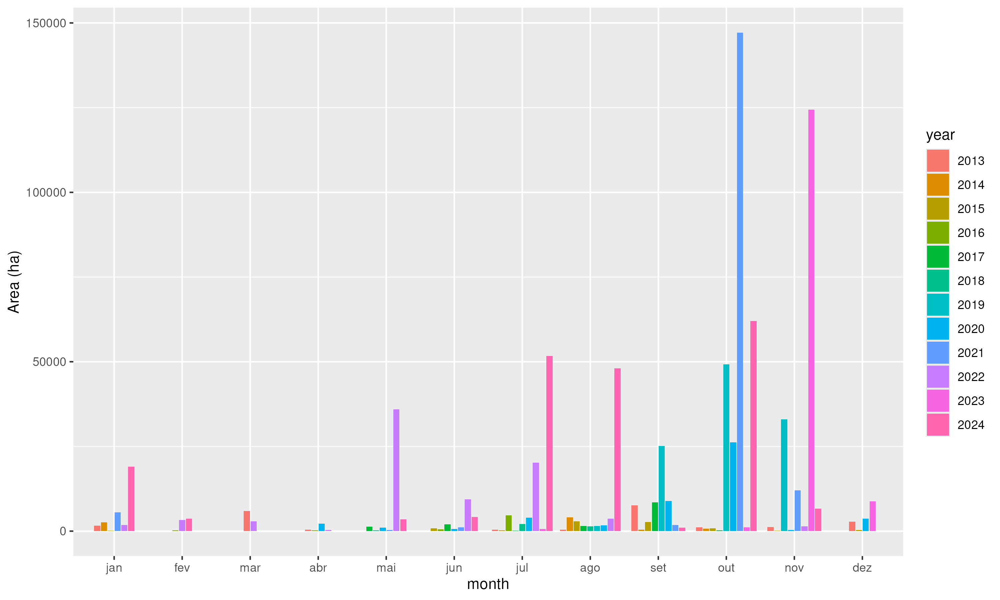
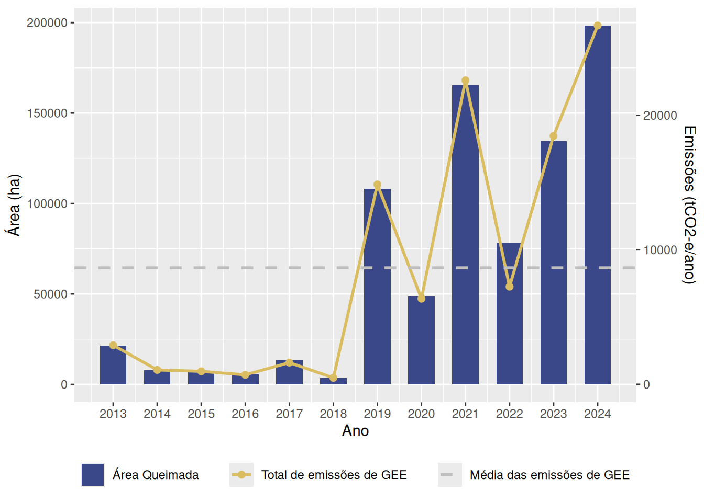
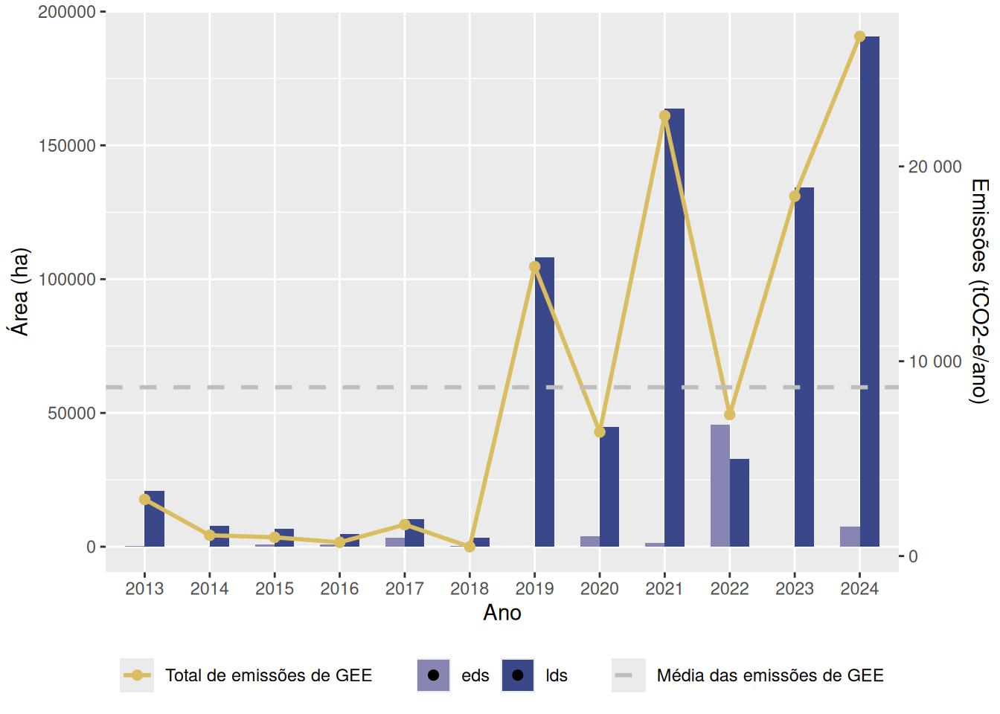
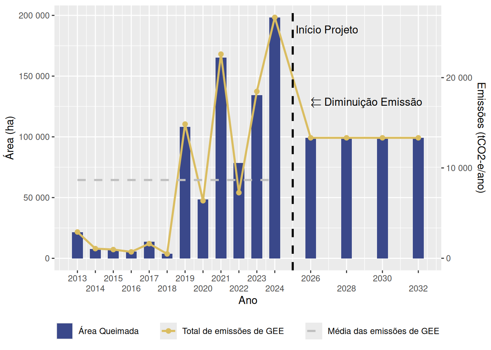

| Número de Queimadas | Área (ha) | % Área total |
|---|---|---|
| 1 | 132126.308 | 16.512 |
| 2 | 283505.479 | 35.430 |
| 3 | 277379.466 | 34.665 |
| 4 | 86953.927 | 10.867 |
| 5 | 18891.908 | 2.361 |
| 6 | 1319.198 | 0.165 |
Proposta de Projeto de Gestão de Queimadas de Savana
Relatório de Avaliação de Viabilidade
1 Introdução
Os incêndios no Pantanal têm causado prejuízos significativos à fauna e flora locais. O aumento na frequência e na intensidade de incêndios tem sido apontado como causa de declínio de populações de diversos organismos (ver, p. ex., Abreu et al. (2004), Valencia-Zuleta et al. (2024)).
A gestão do regime do fogo no Parque Estadual do Pantanal do Rio Negro requer ações integradas e contínuas, combinando ciência, políticas públicas e participação comunitária. A implementação de práticas como o Manejo Integrado do Fogo e a elaboração de planos específicos são essenciais para preservar este ecossistema único e vital, garantindo a sustentabilidade ambiental e a proteção da biodiversidade local.
2 Objetivos
Avaliar a viabilidade do local proposto para desenvolver um projeto SFM, incluindo 1. Determinar a adequação do sítio em termos de clima, vegetação e regime de incêndios prevalecente 2. Propor uma metodologia e um esquema para o Projeto e a elegibilidade dos Créditos de Carbono gerados no mercado voluntário de carbono 3. Efetuar cálculos preliminares sobre os potenciais Créditos de Carbono e receitas que podem ser gerados pelo Projeto 4. Propor um modelo financeiro para a realização do Projeto e os custos e despesas previstos 5. Fornecer recomendações sobre a próxima etapa para o desenvolvimento do Projeto SFM.
3 LOCAL PROPOSTO
3.1 LOCALIZAÇÃO E DESCRIÇÃO DO LOCAL
O Pantanal se formou no período Quaternário com o aporte de sedimentos siltosos da Serra da Bodoquena ao sul e arenosos da região da Nhecolândia ao norte. Como a área do Parque é uma zona de transição podemos encontrar vegetação e fitofisionomia dos pantanais arenosos e argilosos (Torrecilha e Mauro 2008).
O Parque Estadual do Pantanal do Rio Negro (PEST do Rio Negro) foi criado através do Decreto Estadual N° 9.941 de 5 de Junho de 2000, do Estado de Mato Grosso do Sul. Possui uma área de 78.302,9781 ha e seu território abrange os municípios de Corumbá e Aquidauana. Seu principal objetivo é de preservar amostras de ecossistemas do Pantanal, espécies da flora e fauna nele associadas, a manutenção do regime hidrológico garantindo a sua sazonalidade, a valorização do patrimônio paisagístico e cultural da região, objetivando sua utilização para fins de pesquisa científica, educação ambiental, recreação e turismo em contato com a natureza. A área engloba grande parte de um extenso sistema de irrigação: o brejão do rio Negro, lagoas permanentes e cordões de matas que funcionam como refúgio e alimento da fauna silvestre local, além de ser considerado como um berçário de peixes do Pantanal (Torrecilha e Mauro 2008).
A área do Parque era composta por três propriedades (Torrecilha e Mauro 2008).

3.2 CLIMA E VEGETAÇÃO
O clima do Pantanal é tropical subúmido (Aw), com estações sazonais chuvosas (novembro a março) e secas (abril a outubro) bem distintas, que transformam a planície em uma grande área inundada durante o período chuvoso. O sistema hidrográfico do Pantanal é formado pelo rio Paraguai e seus afluentes e um complexo de corpos d’água permanentes e temporários. As áreas próximas aos canais principais são fortemente influenciadas pelas águas e sedimentos transportados pelos rios, enquanto que as áreas mais distantes dos canais principais são inundadas pela chuva local. Além do comportamento sazonal das inundações, o fenômeno das enchentes apresenta uma flutuação plurianual, com alternância de períodos de seca e de cheia Torrecilha e Mauro (2008).
A paisagem da região do Parque é dominada por baías e corixos onde são encontradas espécies de plantas aquáticas como o camalote (Eichornia spp.), a vitória-régia (Victoria amazonica), o alface d´água (Pistia stratiotes) e a orelha de onça (Salvinia auriculata). Áreas abertas cobertas de gramíneas nativas, como o capim-mimoso (Axonopus purpusii, Reimarochloa spp, Paratheria prostrata), formam os chamados campos limpos. Essas áreas são comuns em partes mais baixas do Pantanal que sofrem inundações a cada estação de cheia e são conhecidas como vazantes. Entre as vazantes e as áreas mais altas com predomínio de arbóreas temos uma formação com vegetação de cerrado, com árvores de porte médio como lixeira (Curatella americana), canjiqueira (Byrsonima spp) e entremeadas de arbustos e plantas rasteiras como araticum (Anona coriacea). Essas áreas possuem espécies de bordas de cordilheiras e capões, e servem como refúgio para o gado e animais silvestres durante a cheia (Torrecilha e Mauro 2008).
As cordilheiras e capões, caracterizadas por áreas mais elevadas em relação ao perfil fitofisionômico (> 2 metros) possuem árvores como a aroeira (Astronium spp.), o ipê-roxo ou piúva (Tabebuia spp.), o angico vermelho (Anadenanthera colubrina), o manduvi (Sterculia apetala) e o ipê-amarelo (Tabebuia aurea) (Torrecilha e Mauro 2008).
3.3 REGIME DE INCÊNDIOS PREDOMINANTE
A ocorrência de incêndios no Pantanal está frequentemente associada a variáveis meteorológicas, como temperatura elevada, baixa umidade relativa do ar e alta radiação solar. Esses fatores criam condições propícias para a propagação do fogo, especialmente durante a estação seca. Modelagens preditivas utilizando técnicas de análise multivariada demonstraram que há correlação dos fatores meteorológicos com o número de focos, mostrando que essas variáveis guardam uma importante relação com as condições da vegetação do Pantanal de Corumbá-MS e afetam diretamente a ocorrência de focos de queimadas e incêndios, onde se destacaram a radiação solar, a umidade relativa e a temperatura (Viganó et al. 2018).
Nos últimos anos, o parque tem enfrentado desafios significativos relacionados aos incêndios florestais. A combinação de mudanças climáticas, que resultam em períodos de seca mais intensos, e práticas humanas inadequadas aumentaram a frequência e a intensidade desses incêndios. Em resposta, diversas iniciativas foram implementadas para prevenir e combater o fogo na região (IMASUL 2024).
Uma das principais estratégias adotadas é o Manejo Integrado do Fogo (MIF), que inclui a realização de queimas prescritas. Essa técnica consiste em queimar controladamente áreas específicas durante períodos seguros, reduzindo o acúmulo de material combustível e, consequentemente, o risco de incêndios descontrolados durante a estação seca. Em 2023, o Parque Estadual do Pantanal do Rio Negro passou por uma queima prescrita no final de maio como medida preventiva (IMASUL 2024).
Além das queimas prescritas, a elaboração de Planos de Manejo Integrado do Fogo (PMIF) tem sido fundamental. Esses planos são desenvolvidos com base em dados científicos e informações atualizadas, visando estabelecer estratégias eficazes de prevenção e combate aos incêndios florestais. A colaboração entre instituições governamentais, organizações não governamentais e comunidades locais tem sido essencial para o sucesso dessas iniciativas Viganó et al. (2018).
Apesar dos esforços, os desafios persistem. Eventos climáticos extremos, como secas prolongadas, têm intensificado as condições propícias para incêndios. Estudos indicam que as mudanças climáticas aumentaram em 40% a intensidade de calor e seca durante os incêndios no Pantanal em junho de 2024, tornando as condições para o fogo quatro a cinco vezes mais prováveis (El País América Futura 2024).
O PEST do Rio Negro é dominado por um regime de fogo LDS (“Late Dry Season”, Final de estação seca) frequente com a maioria dos incêndios e área queimada, e a área queimada aumentou significantemente partir de 2022, sendo setembro, outubro e novembro os meses com aumento consistente das áreas queimadas (ver Figura 2 e Tabela 1). Os prados associados a linhas de drenagem e rios, particularmente nas regiões particularmente nas regiões fronteiriças a sul e a leste, registam a maioria dos incêndios EDS, uma vez que estas paisagens secam secam mais cedo. Os incêndios LDS são predominantes nas savanas de miombo e nas florestas da paisagem montanhosa ondulante (ver MAPA).

| Época de incêndio | Área (ha) | % Total Área |
|---|---|---|
| Early Dry Season | 5.328 | 8% |
| Late Dry Season | 60.702 | 92% |
A partir da análise da Figura 2 e da Tabela 1 pode-se verificar que há uma clara variação na área queimada ao longo dos meses, destacando a influência da sazonalidade do fogo no Parque Estadual do Pantanal do Rio Negro. Há meses com picos evidentes de queimadas e outros com pouca ou nenhuma atividade. Também é possível se observar um aumento considerável da área queimada ao longo dos anos.
É possível identificar que outubro apresentou o maior pico de área queimada, especialmente em 2020. Novembro também possui valores elevados, especialmente em 2023. Agosto e setembro mostram valores significativos de área queimada, entretanto mais baixos que os meses subsequentes. Maio a julho, mostraram picos menores em comparação com os meses citados anteriormente, mas ainda assim possuem registros consideráveis de fogo, principalmente em 2022 e 2023. Assim, como esperado, os meses mais secos geralmente concentram os picos de queimadas.
| Ano | Área (ha) | % Área total |
|---|---|---|
| 2013 | 21761.399 | 2.720 |
| 2014 | 8030.472 | 1.004 |
| 2015 | 7818.546 | 0.977 |
| 2016 | 5690.267 | 0.711 |
| 2017 | 13709.144 | 1.713 |
| 2018 | 3717.425 | 0.465 |
| 2019 | 108926.193 | 13.613 |
| 2020 | 48694.458 | 6.085 |
| 2021 | 168100.914 | 21.008 |
| 2022 | 78952.656 | 9.867 |
| 2023 | 134940.441 | 16.864 |
| 2024 | 199834.371 | 24.974 |
| Ano | Local | Área (ha) | % Área total |
|---|---|---|---|
| 2013 | PEPRN | 1605.863 | 0.201 |
| 2013 | ZA | 20155.536 | 2.519 |
| 2014 | PEPRN | 1980.284 | 0.247 |
| 2014 | ZA | 6050.188 | 0.756 |
| 2015 | PEPRN | 1452.580 | 0.182 |
| 2015 | ZA | 6365.966 | 0.796 |
| 2016 | PEPRN | 447.871 | 0.056 |
| 2016 | ZA | 5242.396 | 0.655 |
| 2017 | PEPRN | 6523.691 | 0.815 |
| 2017 | ZA | 7185.453 | 0.898 |
| 2018 | PEPRN | 501.628 | 0.063 |
| 2018 | ZA | 3215.797 | 0.402 |
| 2019 | PEPRN | 11217.023 | 1.402 |
| 2019 | ZA | 97709.171 | 12.211 |
| 2020 | PEPRN | 11445.475 | 1.430 |
| 2020 | ZA | 37248.984 | 4.655 |
| 2021 | PEPRN | 46336.773 | 5.791 |
| 2021 | ZA | 121764.141 | 15.217 |
| 2022 | PEPRN | 17842.573 | 2.230 |
| 2022 | ZA | 61110.082 | 7.637 |
| 2023 | PEPRN | 40826.992 | 5.102 |
| 2023 | ZA | 94113.449 | 11.762 |
| 2024 | PEPRN | 57633.186 | 7.203 |
| 2024 | ZA | 142201.186 | 17.771 |
| Local | Área (ha) | % Área total |
|---|---|---|
| PEPRN | 197813.9 | 24.721 |
| ZA | 602362.3 | 75.279 |
| Classe de Vegetação | Área (ha) | % Área total |
|---|---|---|
| A | 7813.924 | 0.977 |
| Cs | 216.715 | 0.027 |
| Fa | 55150.647 | 6.892 |
| ST | 309237.962 | 38.646 |
| Sd | 70288.906 | 8.784 |
| Sg | 168572.028 | 21.067 |
| Sp | 188896.104 | 23.607 |
4 METODOLOGIA PROPOSTA
4.1 METODOLOGIA ISFM
A metodologia proposta é a Gestão Internacional do Fogo na Savana (ISFM, na sigla em inglês). Uma metodologia globalmente aplicável para a redução de emissões, e do aumento do sequestro de carbono como opção, em paisagens de savana inspirada nas práticas tradicionais de gestão do fogo.
Está atualmente a ser desenvolvida pela Maki e pelo ISFMI como Verra (Verified Carbon Standard), uma nota concetual aceite em 2023 e um projeto de metodologia a ser finalizado.
A metodologia ISFM está relacionada com a prevenção ou redução das emissões de metano (CH4) e óxido nitroso (N2O) nas savanas lenhosas globais, alterando a estação em que os incêndios ocorrem. O conceito ISFM incentiva a mudança da sazonalidade do fogo do final da estação seca para o início da estação seca, o que reduz a intensidade do fogo e reduz as emissões associadas aos incêndios de alta intensidade no final da estação seca em paisagens de savanas lenhosas globais.
Além disso, a metodologia também oferece um quadro opcional para permitir a contabilização de potenciais de sequestro de carbono acima da biomassa lenhosa do solo (tanto na biomassa viva como na biomassa lenhosa acima do solo (tanto na biomassa viva como nos detritos lenhosos mortos/grosseiros) que estão associados à redução dos incêndios intensos no final da estação seca, bem como os aumentos no reservatório de carbono orgânico do solo (caso existam).
A metodologia ISFM centra-se na definição de uma “estação seca precoce” e de uma “estação seca tardia”, cada uma com o seu próprio conjunto de parâmetros de cálculo para determinar as emissões líquidas de metano e de óxido nitroso.
Os cálculos de redução das emissões de GEE calculam as emissões de metano e de óxido nitroso, mas não mas não incluem as emissões de CO2 porque o CO2 não é afetado significativamente pela sazonalidade dos incêndios nas savanas. (Em savanas altamente sazonais, as diretrizes do IPCC assumem que a quantidade de CO2 emitida durante uma estação de incêndios é equivalente à quantidade removida da atmosfera através do crescimento da vegetação na estação húmida seguinte).
4.2 REGIME DE COMÉRCIO DE CARBONO
As Unidades de Carbono Verificado (VCU), emitidas pela Verra ao abrigo da Norma Verified Carbon, representam uma redução ou remoção de uma tonelada de dióxido de carbono equivalente (CO2e) alcançada pelo projeto.
As VCUs geradas pelo Projeto SFM destinam-se a ser comercializadas no mercado internacional de carbono voluntário. internacional.
5 ATIVIDADES DO PROJETO
5.1 DESENVOLVIMENTO E REGISTO
As atividades necessárias para desenvolver um projeto de Manejo Florestal Sustentável (SFM) e registrá-lo no Programa VCS da Verra incluem:
- Processo de dupla diligencia.
- Processo de consulta às partes interessadas e Consentimento Livre, Prévio e Informado (FPIC)
- Projeto / plano do projeto
- Mapa validado do tipo de combustível da vegetação
- Pacote de registro no VCS
5.2 OPERAÇÕES DE GESTÃO DE INCÊNDIOS
As operações de manejo do fogo envolvem a implementação estratégica de queimas prescritas em escala de paisagem durante a EDS (maio – julho) para transformar os regimes de fogo existentes de incêndios florestais descontrolados de alta intensidade na LDS em regimes de fogo de baixa intensidade.
A implementação começa com técnicas de queima no solo; no entanto, as operações de queima prescrita aérea são essenciais para estabelecer queimadas estratégicas suficientes, que atuam como aceiros para reduzir efetivamente os incêndios na LDS em paisagens remotas e inacessíveis. Cápsulas de ignição retardada são lançadas utilizando o sistema autônomo Raindance Systems R3 Machine, que é fixado no assento padrão de um helicóptero.
Informações de incêndios obtidas por sensoriamento remoto e mapeamento GIS são essenciais para o planejamento do Manejo Sustentável do Fogo (SFM), incluindo histórico de incêndios, informações de fogo ativo em tempo quase real, imagens atualizadas do satélite Sentinel-2 e produtos de mapeamento de carga de combustível. Sistemas de navegação em campo contendo essas informações são igualmente importantes para orientar e adaptar as atividades de implementação.
Uma pequena equipe de SFM, composta por um coordenador/gerente de incêndios e três a quatro profissionais experientes (5 a 10 anos de experiência de campo), coordena e implementa as atividades de manejo do fogo.
As operações de manejo do fogo seguem um ciclo anual de planejamento, implementação e monitoramento, conforme descrito abaixo:
- Planejamento do SFM (abril / maio)
- Levantamentos de campo e análise de informações sobre incêndios para avaliar os principais determinantes do manejo do fogo
- Consultas com as partes interessadas para revisar e planejar os objetivos do manejo do fogo, avaliar a capacidade e os recursos existentes e definir o plano de implementação - Implementação do SFM (maio a julho)
- Queima prescrita estratégica em escala de paisagem durante a EDS para gerar incêndios autolimitantes de baixa intensidade, reduzindo a intensidade do fogo, a área queimada e os incêndios na LDS
- Implementação cuidadosa para proteger a vegetação sensível ao fogo, melhorar o funcionamento do ecossistema (por exemplo, o ciclo da água) e atingir objetivos de uso da terra e gestão da biodiversidade
- Estabelecimento de padrões de queima em mosaico rotacional para diversificar o tempo desde a última queima ao longo dos anos e reduzir a frequência de incêndios.- Monitoramento do SFM (maio a novembro)
- Monitoramento de campo e por sensoriamento remoto para avaliar a eficácia das queimas prescritas na consecução dos objetivos de manejo, confirmar a ocorrência de incêndios autolimitantes e detectar ignições de incêndios na LDS
- Consultas com as partes interessadas para avaliar o apoio de organizações parceiras e parceiros locais.A autorização do Instituto Chico Mendes de Conservação da Biodiversidade (ICMBio), conforme a LEI No 9.985, DE 18 DE JULHO DE 2000 e LEI Nº 11.284, DE 2 DE MARÇO DE 2006, e do Serviço Florestal Brasileiro (SFB), conforme a LEI Nº 12.651, DE 25 DE MAIO DE 2012, será necessária para implementar queimas prescritas no Parque Estadual do Pantanal do Rio Negro e nas Florestas Nacionais, respectivamente.
Além disso, será necessária autorização da Agência Nacional de Aviação Civil (Anac) para aprovar o uso da R3 Machine e a implementação de queimadas aéreas.
5.3 ACOMPANHAMENTO, INFORMAÇÃO E VERIFICAÇÃO
As atividades necessárias para a emissão de um VCU para reduções de emissões ou sequestro de carbono sob o programa Verra VCS.
O método para quantificar as reduções de emissões de metano (CH₄) e óxido nitroso (N₂O) é baseado na observação direta por sensoriamento remoto da extensão espacial e da data dos incêndios (sazonalidade dos incêndios). Essas observações são então combinadas com parâmetros que definem as cargas de combustível, a eficiência da queima, a combustão dos combustíveis e os fatores de emissão de diferentes tipos de combustível da vegetação, conforme literatura revisada por pares, derivada de medições de emissões de incêndios ocorrendo dentro de uma região específica aplicável.
Parâmetros de referência específicos para miombo, derivados da pesquisa colaborativa financiada pelo ISFMI e Maki, incluindo o DF e o DNPW da Zâmbia, ao longo dos últimos cinco anos, serão publicados em breve. O manuscrito “Framework for a savanna burning emissions abatement methodology applicable to fire-prone miombo woodlands in southern Africa” (Miombo Paper) foi recentemente submetido (dezembro de 2023) ao International Journal of Wildland Fire.
O método para quantificar o sequestro / remoção de carbono exige a incorporação de parâmetros de referência específicos para apoiar a Metodologia ISFM, que estão atualmente em fase de pesquisa (ver Seção 6.3).
Um sistema digital de monitoramento, relatório e verificação (MRV) ou uma ferramenta metodológica está atualmente em desenvolvimento para automatizar as observações diretas e os cálculos de quantificação necessários para monitorar o desempenho do projeto e facilitar os requisitos de relatório e auditoria do VCS.
6 POTENCIAIS CRÉDITOS DE CARBONO
6.1 TIPOS DE COMBUSTÍVEL DA VEGETAÇÃO
6.2 POTENCIAL DE REDUÇÃO / PREVENÇÃO DE EMISSÕES
O processo seguinte, utilizado na metodologia ISFM (ver seção Seção 4.1), foi adaptado para fornecer estimativas preliminares das emissões da linha de base e do projeto, utilizando a resolução relativamente Burned Area Product (MCD64A1) e o mapa VFT WorldCover 2021 generalizado da ESA.
Parque Estadual do Pantanal do Rio Negro


| Ano | eds | lds | t_co2e | area_queimada_ha |
|---|---|---|---|---|
| 2013 | 424.611 | 20966.4 | 2907.23 | 21391 |
| 2014 | 0 | 7764.04 | 1067.12 | 7764.04 |
| 2015 | 779.768 | 6654.03 | 961.446 | 7433.8 |
| 2016 | 812.526 | 4770.6 | 704.551 | 5583.13 |
| 2017 | 3252.01 | 10323.3 | 1614.43 | 13575.3 |
| 2018 | 232.298 | 3383.31 | 478.984 | 3615.61 |
| 2019 | 0 | 108100 | 14857.6 | 108100 |
| 2020 | 3797.26 | 44667.7 | 6367.64 | 48464.9 |
| 2021 | 1430.74 | 163813 | 22601.1 | 165244 |
| 2022 | 45577.9 | 32884.5 | 7260.65 | 78462.3 |
| 2023 | 0 | 134373 | 18468.7 | 134373 |
| 2024 | 7626.26 | 190729 | 26673.1 | 198356 |
| Média | 5327.78 | 60702.4 | 8663.55 | 66030.2 |

6.3 AUMENTO DA SEQUESTRAÇÃO / REMOÇÃO DE CARBONO
7 MODELO FINANCEIRO PROPOSTO
8 RECOMENDAÇÕES
Abreu, Kauê Cachuba de, Letícia de Paulo Koproski, Ângela Márcia Kuczach, Pedro Chaves de Camargo, e Tiago Giarola Boscarato. 2004. «Grandes Felinos E O Fogo No Parque Nacional De Ilhagrande Brasil». FLORESTA 34 (2): 163–67. http://www.bibliotecaflorestal.ufv.br/handle/123456789/16601.
El País América Futura. 2024. «Las condiciones detrás de los devastadores incendios en el Pantanal sí fueron intensificadas por el cambio climático». https://elpais.com/america-futura/2024-08-08/las-condiciones-detras-de-los-devastadores-incendios-en-el-pantanal-si-fueron-intensificadas-por-el-cambio-climatico.html.
Garcia, Eduardo Alfonso Cadavid. 1984. «O clima no Pantanal Mato-Grossense». Relatório técnico. Embrapa/UEPAE de Corumbá. https://www.embrapa.br/busca-de-publicacoes/-/publicacao/787712/o-clima-no-pantanal-mato-grossense.
IMASUL. 2024. «Ação conjunta entre governo e organizações da sociedade civil reforça infraestrutura do Parque Estadual do Pantanal do Rio Negro». https://www.imasul.ms.gov.br/acao-conjunta-entre-governo-e-organizacoes-da-sociedade-civil-reforcam-infraestrutura-do-parque-estadual-do-pantanal-do-rio-negro/.
Torrecilha, Sylvia, e Rodiney de Arruda Mauro. 2008. «Plano De Manejo do Parque Estadual do Pantanal do Rio Negro». Plano de Manejo. Estado do Mato Grosso do Sul.
Valencia-Zuleta, Alejandro, Aline Richter, Gabriela do Valle Alvarenga, Flavia Regina de Queiroz Batista, Leonardo Felipe Bairos Moreira, Bruna Arbo-Meneses, Ana Paula Gomes Lustosa, Christine Strüssmann, Carlos Roberto Abrahão, e Lara Gomes Côrtes. 2024. «O fogo e a herpetofauna no Pantanal: observações durante e após os incêndios». Biodiversidade Brasileira 14 (4). https://doi.org/10.37002/biodiversidadebrasileira.v14i4.2556.
Viganó, Hevelyne Henn da Gama, Celso Correia de Souza, Marcia Ferreira Cristaldo, José Francisco dos Reis Neto, e Leandro de Jesus. 2018. «Incêndios no Pantanal de Corumbá, MS: modelagem e previsão a partir das técnicas de análise multivariada». Revista Ambiente & Água 13 (outubro): e2024. https://doi.org/10.4136/ambi-agua.2024.